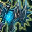
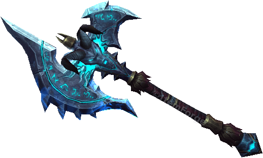
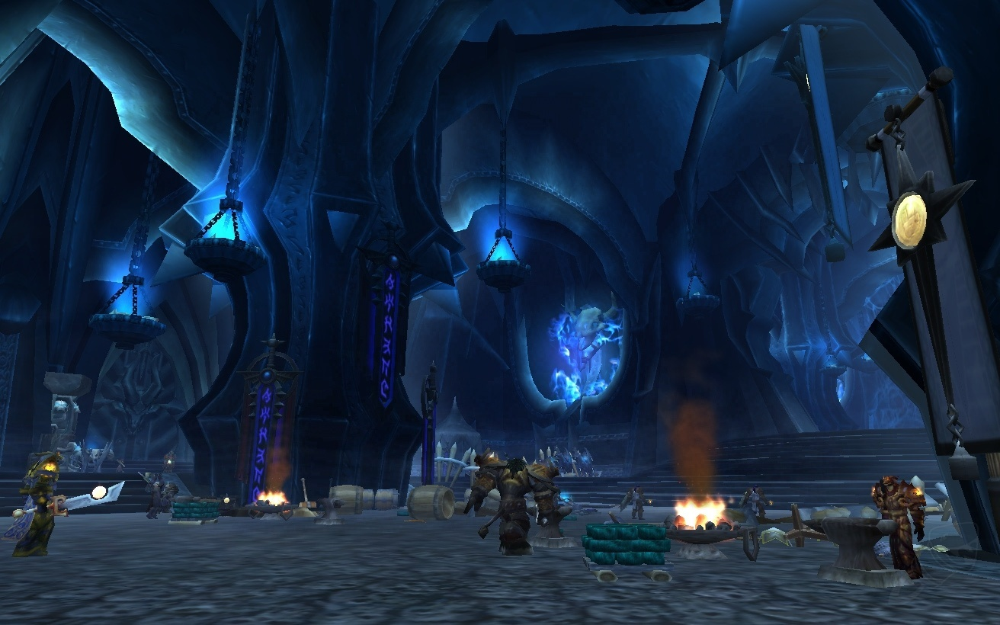

 Shadowmourne
Download Shadowmourne Icon
Shadowmourne is a legendary axe that is the counterpart to Frostmourne, the blade of the The Lich King. Forged with the blood of an Old God, fragments of the Frozen Throne, and souls of the dead, Shadowmourne is a weapon born of evil.
Weapon Stats
Item Level 284
Binds when picked up
Unique
Two-Hand Axe
954 - 1,592 Damage Speed 3.70
(344.05 damage per second)
+223 Strength
- Red Socket
- Red Socket
- Red Socket
- Socket Bonus: +8 Strength
- Durability
- 145 / 145
- Classes:
- Warrior, Paladin, Death Knight
- Requires Level 80
Weapon Attributes
- Equip: Improves critical strike rating by 114 (2.48% @ L80).
- Equip: Increases your armor penetration by 114 (0.00% @ L80).
- Equip: Your melee attacks have a chance to drain a Soul Fragment granting you 30 Strength. When you have acquired 10 Soul Fragments you will unleash Chaos Bane, dealing 1900 to 2100 Shadow damage split between all enemies within 15 yards and granting you 270 Strength for 10 sec.
Obtaining Shadowmourne
The questline to forge Shadowmourne begins by the Death Knight,
Paladin, or Warrior player reaching friendly with
The Ashen Verdict.

Bonus Rewards
- Reins of the Crimson Deathcharger
- Muradin's Favor
- Jaina's Locket
- Tabard of the Lightbringer
- Sylvanas's Music Box
Transmog
| Transmog set 1 | Transmog set 2 | Transmog set 3 | Transmog set 4 |
|---|---|---|---|
| Acherus Knight's Hood | Dreadnaught Helmet | Landsoul's Horned Greathelm | Sanctified Scourgelord Faceguard |
| Blood-soaked Saronite Plated | Dreadnaught Pauldrons | Raging Behemoth's Shoulderplates | Sanctified Scourgelord Pauldrons |
| Conqueror's Darkruned Chestguard | Dreadnaught Breastplate | Sanctified Scourgelord Chestguard | Sanctified Scourgelord Chestguard |
| Shadow's Edge | Demise | Sulfuras, Hand of Ragnaros | Glorenzelg, High-Blade of the Silve |